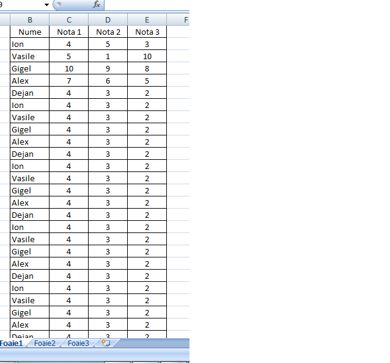
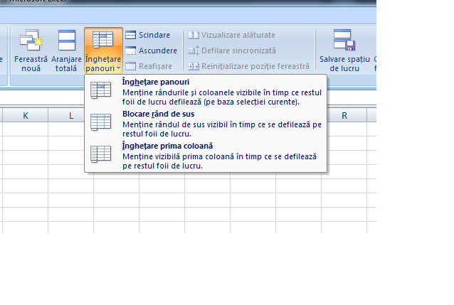
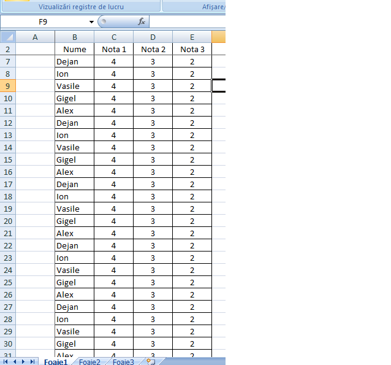

Pentru a ingheta panourile/capurile de tabel trebuie sa urmati urmatorii pasi:
1. Construiti tabelul:

2. Mergeti la Vizualizare->Fereastra->Inghetare Panouri. De aici alegi ce vrei sa ingheti.

3. Dupa ce ati selectat optiunea pe care o doriti linia/coloana sau ce ati dorit sa inghetati va ramane si daca veti face scroll down.

Inapoi